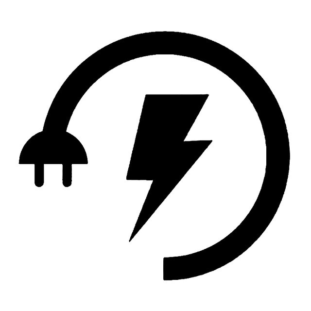
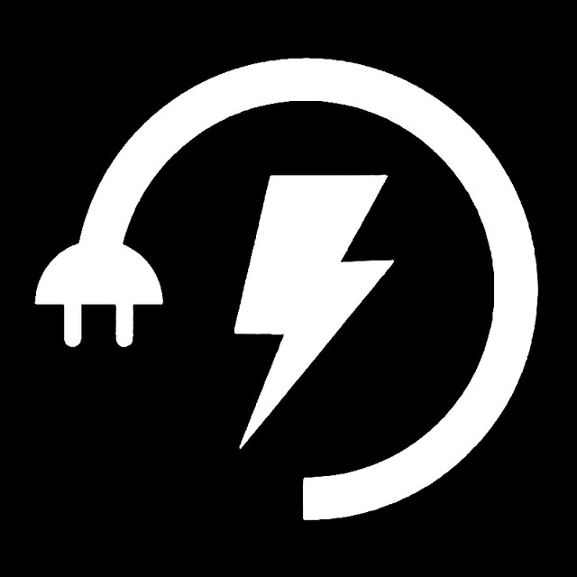
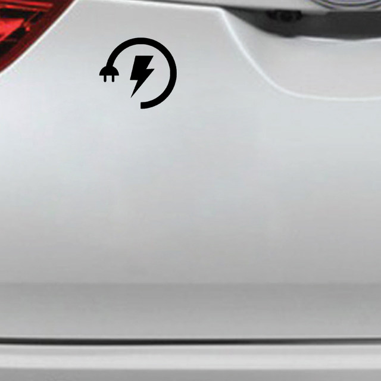
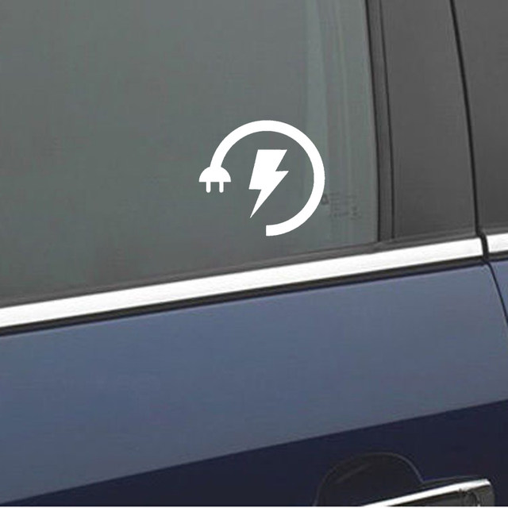

The package includes:
1 XCar Sticker Wire Plug Vinyl Sticker for Electric Vehicle Charging Port Body Rear Window Decorative Decals13CM*12CM
Brand new, strong versatility and good quality. Easy to install, just paste it, suitable for all vehicles.
Material: high-quality PVC environmental protection material, waterproof and sunscreen, no fading
size:
13CM 18CM 23CM 28CM
Color: as shown




1 Paste method of small car stickers with ? [ dry paste method]
Tools: rags, scrapers or credit cards
1. Clean the body and keep it dry.
2. Determine the location of the paste. Under normal circumstances, slowly paste, while scraping with tools, while uncovering the bottom paper.
3. If the figure is not big, you can also tear off the transparent transfer film and stickers before pasting. But care must be taken not to cause accidental adhesion.
4. After pasting, scrape and press again and again several times. The transparent transfer membrane was removed.
5. In the door and the car seam with an art knife, to the inside of the bag.
6. Do not let the stickers and the body have any separation or protrusion.
2 The pasting method of large-scale car stickers with [wet pasting method]?
Tools:rags, sprinklers, scrapers or credit cards
1. Clean the body and sprinkle water evenly on the body parts to be pasted to reduce the viscosity of the sticker and facilitate the adjustment of the position.
2. Determine the location of the paste. Slowly one side paste, while gently scrape with a tool, while uncovering the paper.
3. In case of door handle or anti friction strip, the material shall be cut and wrapped according to the situation.
4. Adjust properly. After confirming the general position of the figure, wipe off the water and bubbles repeatedly. The transparent transfer membrane was removed.
5. In the door and the car seam with an art knife, to the inside of the bag.
6. Do not let the stickers and the body have any separation or protrusion.
7. Try to let the moisture in the stickers dry thoroughly, and if possible, moderate heating and drying can be carried out. According to the weather, wash the car in a day or two
Cleaning method:
Gently scrape the edge of the sticker with your fingernail and tear it off completely. It will not leave any mark or damage the paint. In winter, if it is cold and unable to scrape the edges and corners, the adhesive tape can be heated properly with an electric hair dryer, and the glue can be easily removed after it is softened.
Sticker culture:
Car stickers, commonly known as "La Hua", are known to have originated in the United States. At first, it appeared in the form of a public, and gradually transformed into a kind of automobile accessories with the improvement of humanities.
Different "pull flowers" can make you feel different. How to make "La Hua" more personalized, completely belongs to your personal style! In racing, we will find that every car is colorful and eye-catching.
This is the effect of body stickers.
How to make your car different? Stickers are the quickest and most economical way. Car stickers are like people's clothes and can be changed at any time